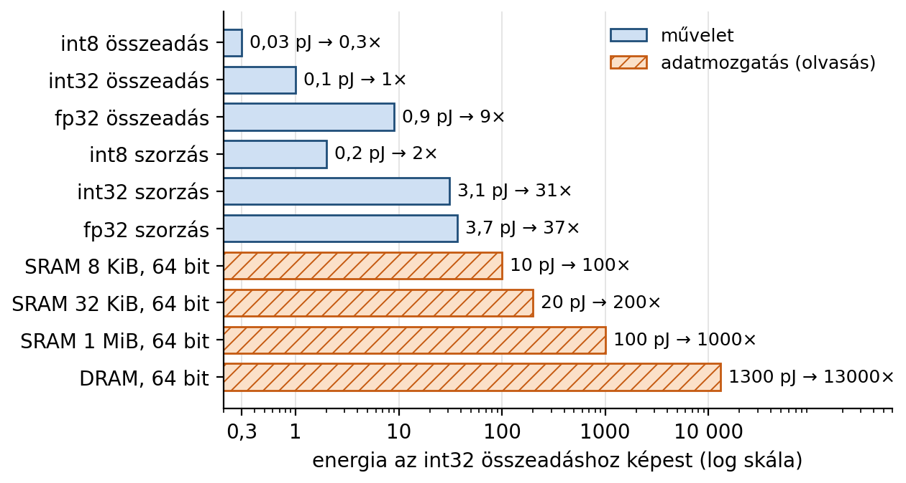

Ugyanaz a program, ugyanaz a processzor, ugyanaz a helyes eredmény, mégis eltérő számla az akkumulátornak. Tegyük fel, hogy egy feladat 6 milliárd órajelciklust igényel. A könyv tanítómagja ezt 3 GHz-en, 1,0 V tápfeszültséggel 2 s alatt végzi el, és közben 15 J energiát fogyaszt. Ha ugyanez a mag 1,5 GHz-en, 0,75 V-on fut, kétszer annyi idő alatt, 11,25 J-lal is beéri. Vagyis a lassabb futás a takarékosabb. Csakhogy ha a gépben van még egy 4 W-os rész, amely addig nem kapcsolható le, amíg a mag dolgozik, a sorrend megfordul: a gyors futás 23,2 J, a lassú 27,25 J.
A számok modellből származnak, nem mérésből. Azt akarjuk megérteni, mi határozza meg őket: miért fogyaszt egy áramkör akkor is, ha semmit sem csinál; milyen mérőszámmal érdemes két megoldást összevetni; és miért kerül sokszor többe egy adatot odavinni a számoláshoz, mint elvégezni a számolást. Az energia ma a processzortervezés egyik legszigorúbb korlátja, a telefonban az akkumulátor, a szerverben a hűtés miatt.
A Boole-algebra, kapuk és a CMOS-tranzisztor alfejezetben láttuk, hogy egy CMOS-kapu kimenete vagy a tápfeszültségre (VDD), vagy a földre kapcsolódik, és a kimeneti vezeték, valamint a rá kötött következő kapuk bemenetei együtt egy kis kapacitást (capacitance) alkotnak. Képzeljük ezt vödörnek. Amikor a kimenet 0-ról 1-re vált, a tápból megtöltjük a vödröt; amikor 1-ről 0-ra vált, kiöntjük a földre. A kiöntött töltés nem kerül vissza a tápba. Minden ilyen töltés–ürítés pár tehát meghatározott mennyiségű energiát éget hővé. Ez a dinamikus fogyasztás (dynamic power): csak akkor van, ha valami változik, és annál nagyobb, minél gyakrabban változik.
A második tag abból ered, hogy a kikapcsolt tranzisztor nem tökéletes csap: kevés áram akkor is átszivárog rajta. Ez a statikus fogyasztás vagy szivárgás (leakage), amely addig folyik, amíg az áramkör tápot kap.
A dinamikus részt az dönti el, mennyi munkát végzünk és milyen feszültségen, a statikusat az, mennyi ideig van bekapcsolva az áramkör. Ebből következik a fenti paradoxon. Az ábra bal oldalán a feladat energiája látszik az órajel függvényében rögzített feszültségen (a dinamikus energia vízszintes, a statikus csökken), jobb oldalán a bevezető két stratégiája.
Legyen a kimeneti kapacitás (farad), a tápfeszültség (volt). Amikor a kimenet 0-ról -re emelkedik, a tápból töltés érkezik, mindvégig potenciálról, tehát a felvett energia
A töltés végén a kondenzátorban viszont csak tárolódik. A másik fele töltés közben a bekapcsolt pMOS-tranzisztor ellenállásán alakult hővé, és ez független az ellenállás nagyságától (a nagy ellenállás csak lassítja a folyamatot). Amikor a kimenet visszaesik 0-ra, a tárolt az nMOS-on alakul hővé. Egy teljes átmenetpár tehát pontosan energiába kerül, és a végén minden hő lesz.
Egy processzorban nem minden vezeték vált minden ciklusban. Definíció. Az aktivitási tényező (activity factor) azt adja meg, hogy a kapcsolható összkapacitás hányad része végez átlagosan egy 0→1 átmenetet (és vele egy visszaesést) ciklusonként. Maga az órajelhálózat minden ciklusban egyszer felfut és lefut, az ő tényezője 1; egy ritkán használt egységé közel 0. Ha az órajel frekvenciája , a dinamikus teljesítmény:
A képlet azt mondja, hogy a teljesítmény egyenesen arányos az aktivitással, a kapacitással és a frekvenciával, de a feszültséggel négyzetesen. Ezért a tervező legerősebb eszköze a feszültség csökkentése: 10%-kal kisebb közel 19%-kal kisebb dinamikus teljesítményt ad.
Az órajelkapuzás (clock gating) a tétlen egységek órajelét letiltja, így azok -ja nullára esik, a bennük tárolt állapot pedig megmarad. A szoftver is beleszól: kevesebb utasítás, kisebb adattípus és kevesebb adatmozgatás mind kevesebb átbillenést jelent.
A statikus teljesítmény egyszerűen , ahol az összes szivárgó áram. A nehézség az, hogy ez az áram nem állandó. A legfontosabb összetevője a küszöb alatti szivárgás, amely a tranzisztor küszöbfeszültségétől (threshold voltage, a kapcsolás határfeszültsége) exponenciálisan függ:
ahol a termikus feszültség (300 K-en körülbelül 25,9 mV), pedig a folyamatra jellemző, 1-nél kicsit nagyobb szám. A képlet értelme: néhány tíz millivolt küszöbcsökkentés a szivárgást többszörösére növeli. Melegedéskor a nevező nő, a küszöbfeszültség pedig csökken, ezért a meleg chip jobban szivárog, és ettől tovább melegszik; a hűtésnek ezt a visszacsatolást is kordában kell tartania.
A tervező ezért kompromisszumot köt. Alacsony küszöbbel a kapu gyors, de szivárgós; magas küszöbbel takarékos, de lassú (a feszültség és a sebesség viszonyát a DVFS, a Dennard-skálázás vége és a sötét szilícium alfejezet tárgyalja). A chipek ezért a kettőt keverik: gyors tranzisztor a kritikus utakon (Órajel, kritikus út és időzítési korlátok), takarékos máshol. A szivárgás ellen futás közben a teljesítménykapuzás (power gating) segít: egy egész egységet leválasztunk a tápról. Ekkor a szivárgás is megszűnik, de az állapot elvész vagy menteni kell, és a visszakapcsolás időbe és energiába kerül. Rövid szünetre ezért nem éri meg.
Az energia a teljesítmény idő szerinti összege; állandó teljesítménynél . A futási időt a Végrehajtási idő, CPI és a vasegyenlet alfejezetből ismerjük: , ha a feladat ciklus. A dinamikus energia ekkor
vagyis a frekvencia kiesik: ugyanazt a munkát ugyanazon a feszültségen kétszer lassabban elvégezni dinamikus energiában semmit sem nyerünk. A statikus energia viszont , tehát lassabb futásnál nő. Hogy melyik mérőszám a helyes, a kérdéstől függ:
| Mérőszám | Képlet | Mikor ez a jó kérdés? |
|---|---|---|
| teljesítmény (W) | hűtés, tápegység, hőkeret: mennyit ad le egyszerre | |
| energia (J) | akkumulátor, villanyszámla: mennyibe kerül a feladat | |
| EDP (J·s) | a takarékosság és a gyorsaság egyformán számít | |
| ED²P (J·s²) | a sebesség fontosabb, pl. kiszolgálók |
A „takarékosabb” tehát mást jelent hűtési és mást akkumulátorkorlátnál: a lassabb mag kisebb teljesítményű, de lehet nagyobb energiájú. Az ED²P azért kedvelt a processzorok összevetésére, mert ha a feszültség arányos a frekvenciával (és a szivárgást elhanyagoljuk), akkor és , tehát nem függ a beállított munkaponttól: a tervezés minőségét méri, nem a feszültség beállítását.
Egy periodikus feladatnak időablaka van (például 4 s). Két stratégiát hasonlítunk össze. A („race to idle”): gyorsan dolgozunk ideig, majd mély alvásban várunk, teljesítménnyel. B: lassan, alacsony feszültségen, az egész ablakot kitöltve dolgozunk. Jelölje azt a teljesítményt, amely a magon kívüli, csak alvásban lekapcsolható részeké (közös cache, memóriavezérlő). Ekkor
Itt és a mag saját teljesítménye a két munkapontban. Az A stratégia annál jobb, minél nagyobb (minél hamarabb lekapcsolhatjuk, annál több energiát takarítunk meg) és minél kisebb . A B stratégia akkor nyer, ha a feszültség csökkentése nagy megtakarítást hoz a miatt, és nincs mit „lekapcsolni”. Fontos határeset: ha a feszültséget nem lehet csökkenteni (rögzített ), akkor azonos, és a gyors futás nyer, amint kisebb az éber állapot statikus és egyéb teljesítményénél.
A számítás maga meglepően olcsó. Az alábbi nagyságrendek 45 nm-es technológiára vonatkoznak, és M. Horowitz 2014-es előadásának [S-HOROWITZ14] adataiból származnak, amelyeket a [S-HP] tankönyv is közöl (ellenőrizendő: az eredeti táblázat értékeit ehhez a könyvhöz nem vetettük össze a forrással). Újabb technológián minden érték kisebb, de az arányok tanulsága megmarad.

Figyeljük meg az ugrásokat: egy 64 bites DRAM-olvasás az int32
összeadás nagyjából tizenháromezerszerese, és még a kis, magközeli SRAM
is két nagyságrenddel drágább. A memóriahierarchia (lásd Lokalitás és a memóriahierarchia) tehát nemcsak
időt, hanem energiát is takarít meg, és a blokkosított
matmul (Cache-szimulátor és
cache-tudatos programozás) ezért takarékos is: ugyanazt a számítást
kevesebb DRAM-forgalommal végzi. Ezért nem ingyenes a nagy
elágazásbecslő sem (TAGE-elv és
perceptron-becslő): a tábláit minden lekéréskor olvasni kell.
A Szisztolikus tömbök és a TPU-elv kis pontosságú aritmetikájának energiaelőnye is látszik: az int8 szorzás-összeadás ( pJ) körülbelül hússzor olcsóbb az fp32-esnél ( pJ), ráadásul negyedannyi adatot kell mozgatni. A gyorsítók energiaelőnye ebből a kettőből adódik.
Továbbvitt eredmény. Egy 64 bites adat DRAM-ból olvasása nagyságrendekkel (a fenti 45 nm-es adatokkal körülbelül ezerszer–tízezerszer) több energiát visz el, mint egy aritmetikai művelet; a mozgatás drágább, mint a számolás. Erre épít a DVFS, a Dennard-skálázás vége és a sötét szilícium alfejezet, amikor a specializáció értelmét indokolja.
Sok x86-os gép energiaszámlálót ad a processzortokra és annak
részeire (RAPL, running average power limit). Linuxon a
/sys/class/powercap/ alatt olvashatók:
cat /sys/class/powercap/intel-rapl:0/name # pl. package-0
cat /sys/class/powercap/intel-rapl:0/energy_uj # mikrojoule, körbeforduló számlálóA könyv mérőgépén 2026. november 25-én az energy_uj
fájlt csak a rendszergazda olvashatta, ezért itt nincs mért energiaadat.
Ha nálad olvasható, olvasd ki a számlálót a feladat előtt és után, a
különbséget a körbefordulással együtt képezd
(archkit.power.rapl_delta), és vond le a tétlen gép
alapfogyasztását. A számláló az egész tokot méri, ezért csak ismételt,
hosszabb mérés megbízható.
A tanítómag adatai (feltételezett modellértékek): , nF, A, a feladat ciklus.
1. lépés: teljesítmény 1,0 V, 3 GHz mellett. W. W. Összesen 7,5 W.
2. lépés: idő és energia. s, tehát J, ebből 12 J dinamikus és 3 J statikus. J·s.
3. lépés: 0,75 V, 1,5 GHz. W, W (a szivárgó áramot itt állandónak vesszük). s, J, J·s. Energiában a lassú pont jobb, EDP-ben a gyors.
4. lépés: a 4 s-os ablak. W és ismeretlen. A: . B: .
5. lépés: a határ. A két energia egyenlő, ha , azaz W. E fölött a gyors futás takarékosabb, alatta a lassú. A bevezető 4 W-os esetében J, J.
Az archkit.power modul a fenti képleteket tartalmazza. A
Core egy munkapontot ír le, a task_energy egy
feladat idejét és energiáját adja.
import sys; sys.path.insert(0, "code")
from archkit import power as pw
fast = pw.Core(alpha=0.2, cap=10e-9, v=1.0, f=3e9, i_leak=1.5)
slow = fast.at(v=0.75, f=1.5e9)
for name, core in (("1,00 V, 3,0 GHz", fast), ("0,75 V, 1,5 GHz", slow)):
p, t = core.power(), pw.task_energy(core, 6e9)
print(f"{name}: P = {p.dyn:.4f} + {p.stat:.4f} W, T = {t.time:.1f} s, "
f"E = {t.energy:.2f} J, EDP = {t.edp:.1f} J·s")1,00 V, 3,0 GHz: P = 6.0000 + 1.5000 W, T = 2.0 s, E = 15.00 J, EDP = 30.0 J·s
0,75 V, 1,5 GHz: P = 1.6875 + 1.1250 W, T = 4.0 s, E = 11.25 J, EDP = 45.0 J·sA deadline_energy a teljes ablak energiáját számolja,
alvással együtt. A következő blokk végigjárja a
értékeit:
for p_other in (0.0, 1.0, 1.975, 3.0, 4.0):
a = pw.deadline_energy(fast.at(p_other=p_other), 6e9, deadline=4.0, p_sleep=0.1)
b = pw.deadline_energy(slow.at(p_other=p_other), 6e9, deadline=4.0, p_sleep=0.1)
diff = a.energy - b.energy
best = "egyforma" if abs(diff) < 1e-9 else ("A" if diff < 0 else "B")
print(f"P_o = {p_other:5.3f} W A: {a.energy:5.2f} J B: {b.energy:5.2f} J nyer: {best}")P_o = 0.000 W A: 15.20 J B: 11.25 J nyer: B
P_o = 1.000 W A: 17.20 J B: 15.25 J nyer: B
P_o = 1.975 W A: 19.15 J B: 19.15 J nyer: egyforma
P_o = 3.000 W A: 21.20 J B: 23.25 J nyer: A
P_o = 4.000 W A: 23.20 J B: 27.25 J nyer: AVégül a küszöbfeszültség hatása a szivárgásra (, 300 K, feltételezett érték):
for mv in (20, 50, 100):
ratio = pw.leakage_vth_ratio(mv / 1000)
print(f"V_th {mv:3d} mV-tal kisebb -> a szivárgás {ratio:5.2f}-szoros")V_th 20 mV-tal kisebb -> a szivárgás 1.67-szoros
V_th 50 mV-tal kisebb -> a szivárgás 3.63-szoros
V_th 100 mV-tal kisebb -> a szivárgás 13.18-szorosTovábbvitt eredmény. A teljesítménymodell, amelyet
az archkit.power valósít meg:
,
,
,
és rögzített feszültségen a dinamikus energia nem függ a frekvenciától.
Ezt használja a DVFS, a Dennard-skálázás vége és a
sötét szilícium alfejezet a munkapontok összevetésére, és a Vegyes vizsgafeladatsor energiafeladatai.
Az interaktív ábrán a bal oldali két diagram a beállított munkapont teljesítményét és energiáját, a jobb oldali a két stratégiát mutatja. A B mindig 0,75 V-on, 1,5 GHz-en fut, az A a beállított ponton, utána alszik.
A CMOS-áramkör teljesítménye két részből áll. A dinamikus tag, , a kapacitások töltéséből ered, és a feszültséggel négyzetesen nő; a statikus, , a szivárgás, amely a küszöbfeszültségtől és a hőmérséklettől exponenciálisan függ. Az energia ; rögzített feszültségen a dinamikus energia nem függ a frekvenciától, a statikus viszont a futási idővel nő. A teljesítmény, az energia és az EDP más-más kérdésre felel. A „gyorsan befejezni, majd aludni” stratégia akkor nyer, ha sok a csak alvásban lekapcsolható fogyasztás, és veszít, ha a feszültségcsökkentés nagy megtakarítást hoz. Az adatmozgatás, főleg a DRAM-elérés, nagyságrendekkel drágább a számolásnál.
1. W; W. s, J.
2. W µW; egymillió csomópont 3 W. Egy chipben ennél jóval több csomópont van, ezért az és a kordában tartása létkérdés.
3. , J. Egyenlőség: W.
4. int8: műveletenként pJ számolás és pJ olvasás, összesen pJ, azaz mJ. fp32: pJ, azaz mJ. Az arány körülbelül 6,5, jóval kisebb, mint a tisztán aritmetikai 20-szoros, mert int8-nál az olvasás adja az energia nagy részét: a mozgatás dominál.
5. Képlettel: és , ebből .
def break_even(p_sleep, lo=0.0, hi=20.0):
for _ in range(60):
mid = (lo + hi) / 2
a = pw.deadline_energy(fast.at(p_other=mid), 6e9, 4.0, p_sleep).energy
b = pw.deadline_energy(slow.at(p_other=mid), 6e9, 4.0, p_sleep).energy
lo, hi = (mid, hi) if a > b else (lo, mid) # ha A drágább, nagyobb P_o kell
return lo
for ps in (0.0, 0.5, 2.0):
print(f"P_s = {ps:.1f} W: határ = {break_even(ps):.4f} W, képlet: {1.875 + ps:.4f} W")P_s = 0.0 W: határ = 1.8750 W, képlet: 1.8750 W
P_s = 0.5 W: határ = 2.3750 W, képlet: 2.3750 W
P_s = 2.0 W: határ = 3.8750 W, képlet: 3.8750 W6. , , , tehát , amelyből kiesett. Statikus teljesítménnyel , ez -tel szorozva szerint csökken, így az összeg már függ -től: a magasabb frekvenciájú munkapont ED²P-ben kedvezőbbnek látszik.